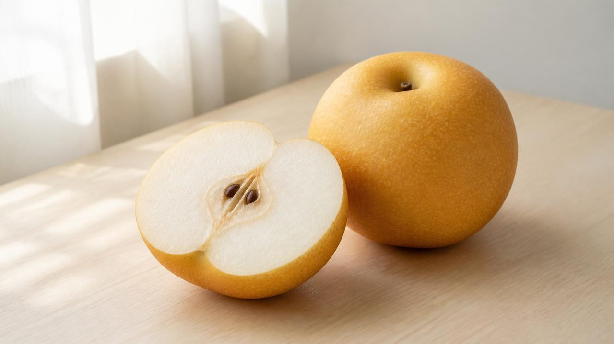
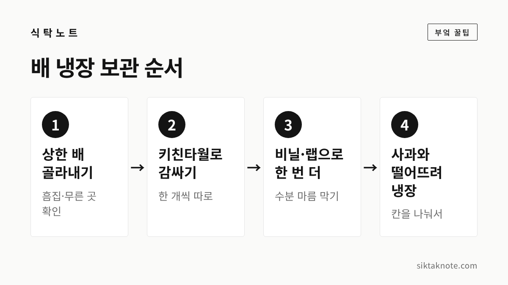
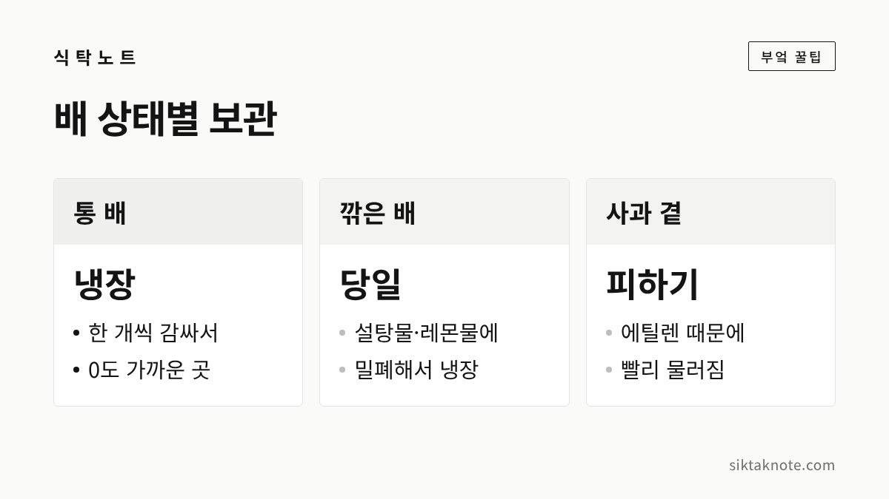

배 보관법 — 한 개씩 감싸 냉장, 사과와 따로 두는 이유와 깎은 배 갈변 막기

3줄 요약
- 배는 키친타월로 한 개씩 감싸고 비닐이나 랩으로 한 번 더 싸서 냉장하면 됩니다.
- 사과에서 나오는 에틸렌 때문에 배가 빨리 물러질 수 있어서, 둘은 꼭 따로 보관하는 게 좋아요.
- 깎은 배는 설탕물이나 레몬물에 잠깐 담갔다가 물기를 닦아 밀폐하고, 되도록 빨리 드세요.

배는 명절 선물로 박스째 들어오는 일이 많은데요. 커다란 배를 한 번에 다 먹기는 어려우니, 처음 받은 날 어떻게 넣어 두느냐가 중요합니다. 몇 가지만 챙기면 아삭한 맛을 꽤 오래 지킬 수 있어요.
한 개씩 감싸서 냉장고로
농촌진흥청은 사과, 배, 포도, 단감 같은 과일을 0도, 상대습도 90~95%에서 보관하는 게 가장 좋다고 안내하고 있습니다. 집에서는 냉장고 채소칸이나 김치냉장고가 이 조건에 가깝죠.
- 흠집이 있거나 무른 배는 먼저 골라내서 먼저 먹어요.
- 흙이나 먼지는 마른 천으로 닦아 냅니다. 물로 씻는 건 먹기 직전에 하세요.
- 키친타월 한 장으로 배를 한 개씩 감싸요.
- 그 위를 투명 비닐봉지나 랩으로 한 번 더 감쌉니다.
- 냉장고 채소칸이나 김치냉장고에 넣어요.
두 번 감싸는 데는 이유가 있습니다. 농촌진흥청 설명으로는 키친타월이 습기가 지나쳐서 생기는 부패를 막아 주고, 비닐이나 랩은 배의 수분이 날아가는 걸 막아 준다고 해요. 배는 물이 많은 과일이라 수분이 빠지면 금방 푸석해지거든요.
사과와 같이 두면 안 되는 이유
과일 바구니에 사과와 배를 함께 담아 두는 경우가 많은데요. 보관할 때만큼은 꼭 따로 두시는 게 좋습니다.
사과는 익으면서 에틸렌이라는 가스를 많이 내는 과일입니다. 에틸렌은 주변 과일과 채소를 빨리 익게 만드는데, 농촌진흥청은 사과에서 나오는 에틸렌 때문에 배 품질이 빠르게 변하니 반드시 분리해 보관하라고 안내하고 있어요. 배가 물러지는 것도 이 가스가 앞당긴다고 합니다.
같은 냉장고에 넣더라도 칸을 나누거나, 사과를 비닐에 따로 밀봉해 두면 됩니다. 사과를 보관하는 요령은 사과 오래 보관하는 법에 따로 정리해 두었으니 함께 보세요. 바나나도 에틸렌을 많이 내는 과일이라 배 곁에 두지 않는 게 좋습니다.
박스째 받은 배, 오래 두려면
배를 박스째 받으면 냉장고에 다 들어가지 않을 때가 있죠. 그럴 땐 김치냉장고를 먼저 써 보세요. 농촌진흥청도 사과·배·포도·단감은 0도 전후의 낮은 온도에 강해서 김치냉장고 보관이 알맞다고 했습니다. 김치냉장고는 제품마다 설정 온도가 다르니, 과일 보관 모드가 있는지 설명서를 한 번 확인하시면 좋겠습니다.
- 들어가지 않는 배는 박스째 해가 들지 않는 서늘한 곳에 두고, 이것부터 먼저 먹어요.
- 박스 안에 무른 배가 하나 있으면 닿아 있던 배도 빨리 상할 수 있으니, 며칠에 한 번은 열어서 살펴봅니다.
- 감싼 키친타월이 축축해졌다면 새것으로 바꿔 주세요.
냉장고에 오래 둔다고 처음 맛이 그대로 가는 건 아닌데요. 먹을 때마다 위쪽 배부터 하나씩 눌러 보고, 조금이라도 물러지기 시작한 것부터 꺼내 드시는 게 좋습니다.
깎은 배가 갈색으로 변할 때

배를 깎아 두면 금세 겉이 누렇게 변하는데요. 과일 속 효소가 공기 속 산소와 만나면서 생기는 반응입니다. 먹어도 괜찮지만 상에 낼 때는 아무래도 신경이 쓰이죠.
- 물 한 컵에 설탕이나 꿀을 조금 풀거나, 레몬즙을 한 숟가락쯤 넣어요.
- 깎은 배를 잠깐 담갔다가 건집니다.
- 키친타월로 물기를 닦아 밀폐 용기에 담아요.
- 공기를 최대한 빼고 냉장합니다.
소금물을 써도 되지만 짠맛이 남을 수 있어서 맹물에 한 번 헹구는 게 좋아요. 이렇게 해 두어도 깎은 배는 수분이 빠지고 맛이 떨어지기 쉬우니, 되도록 그날 안에 드시는 게 좋겠습니다. 손님상에 낼 배라면 먹기 직전에 깎는 게 가장 깔끔합니다.
맛있는 배 고르는 법
농촌진흥청이 알려 준 배 고르는 요령은 간단합니다.
- 상처나 흠집이 없고 표면이 매끈한 것
- 전체적인 느낌이 맑고 투명한 것
- 꼭지 반대편, 그러니까 배 엉덩이 쪽에 미세한 검은 균열이 없는 것
꼭지 반대편에 검은 실금이 보이는 배는 품질이 떨어질 수 있다고 하니, 박스를 받으면 이 부분부터 한 번 뒤집어 보세요. 여기에 들었을 때 크기에 비해 묵직한 배가 물이 많다고들 합니다.
이런 배는 먹지 마세요
껍질이 거뭇하게 물러져 꺼졌거나, 시큼한 발효 냄새가 나거나, 곰팡이가 보이면 버리는 게 안전합니다. 겉은 멀쩡해 보여도 깎았을 때 속이 갈색으로 무르고 물컹하다면 마찬가지예요. 일부만 도려내고 먹는 건 권하지 않습니다.
자주 묻는 질문
냉장고에 넣지 않고 베란다에 둬도 되나요?
서늘한 날이라면 며칠은 괜찮지만, 낮에 해가 들면 금방 물러질 수 있어요. 오래 두실 거라면 냉장 보관이 낫습니다.
신문지로 싸도 되나요?
키친타월 대신 신문지로 감싸는 분들도 많은데요. 어느 쪽이든 습기를 적당히 잡아 주는 게 목적이라, 눅눅해지면 갈아 주는 것만 잊지 않으시면 됩니다.
냉장고에서 꺼낸 배, 바로 먹어도 되나요?
바로 드셔도 괜찮습니다. 너무 차가운 게 싫으시면 먹기 조금 전에 꺼내 두셨다가 깎아 드세요. 꺼낸 배를 다시 넣을 거라면 감쌌던 키친타월과 비닐도 그대로 다시 씌워 주시는 게 좋습니다.
배와 단감은 같이 둬도 되나요?
둘 다 낮은 온도에 강한 과일이라 같은 김치냉장고에 넣어도 되는데요. 각각 따로 감싸 두면 서로 닿아 멍드는 걸 막을 수 있습니다. 사과만큼은 꼭 다른 칸에 두세요.
가을 배는 시원하고 달아서 그냥 먹어도 좋고, 고기 양념에 갈아 넣어도 잘 어울리죠. 아삭한 배, 끝까지 맛있게 드세요.